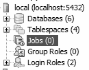
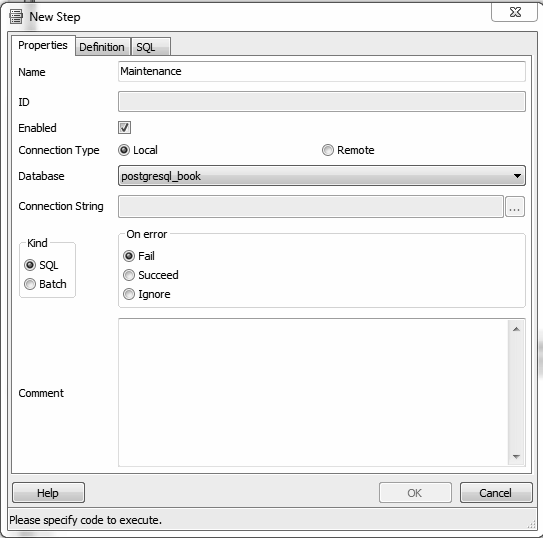
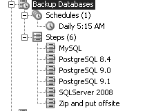

即使批处理任务能以命令行方式执行成功，也并不代表通过 pgAgent 来执行此任务就一定会成功。这一般是因为权限原因导致，pgAgent 总是以 pgAgent 服务所使用的操作系统账户的身份执行规划的任务，如果此账户没有足够权限来执行此批处理任务或者没有访问某些必需路径的权限，那么任务就会失败。
即使批处理任务能以命令行方式执行成功，也并不代表通过 pgAgent 来执行此任务就一定会成功。这一般是因为权限原因导致，pgAgent 总是以 pgAgent 服务所使用的操作系统账户的身份执行规划的任务，如果此账户没有足够权限来执行此批处理任务或者没有访问某些必需路径的权限，那么任务就会失败。
pgAgent 是 PostgreSQL 中执行定时任务的得力工具。同时它也可用于执行操作系统批处理脚本，因此在 Linux/Unix 系统中它可取代 crontab；在 Windows 中，它可取代定时任务规划器。事实上，pgAgent 的定时任务功能远比这里描述的更强大：任何一台机器，不管操作系统是什么，只要它上面能安装 pgAgent，那么我们就可以在此机器上执行定时任务。具体步骤是先在这台机器上装好 pgAgent，然后设置该 pgAgent 连接到一个 PostgreSQL 数据库上，但需要该数据库上预先安装好 pgAgent 所需的功能表和函数。执行定时任务的机器上不需要安装 PostgreSQL 服务端软件，但客户端数据库是必须的，因为要保证 pgAgent 能够连接到外部的 PostgreSQL 服务器。pgAgent 是构建于 PostgreSQL 架构基础上的，因此你可以通过控制服务端的表数据来控制 pgAgent 的行为。例如，如果需要把一个复杂的定时任务复制多次，那么你只需直接登录到 PostgreSQL 服务器并往 pgAgent 的表中插入几条记录即可，完全不需要在 pgAmin 界面上对 pgAgent 执行操作。
本节中我们将教你如何使用 pgAgent。在“设置 pgAgent 来执行定时备份”（http://www.postgresonline.com/journal/archives/19-Setting-up-PgAgent-and-Doing-Scheduled-Backups.html）这篇博文中你可以看到一个真正实用的例子以及设置细节。
你可以从 http://www.pgadmin.org/download/pgagent.php 这个链接下载 pgAgent 的安装包。在 Windows 上，你也可以通过 EnterpriseDB 公司提供的 Stackbuilder 软件来安装 pgAgent。安装包中的 SQL 脚本会在 postgres 库中自动创建一个名为 pgAgent 的新 schema。然后当你通过 pgAdmin 连到数据库服务器时，可以在目录树上看到一个名为 Jobs（作业）的新节点，如图 4-17 所示。

图 4-17：安装了 pgAgent 后的 pgAdmin
如果你希望在其他机器上安装 pgAgent 来执行定时任务，仅需在目标机器上安装 pgAgent 客户端即可，而无需再次执行 pgAgent 自带的 SQL 脚本，因为这个脚本只需在 PostgreSQL 服务端执行一次即可。请特别注意 pgAgent 服务所使用的操作系统账户的权限设置，一定要确保每个 pgAgent 客户端实例都有执行任务所需的权限。
每个定时任务包含两个组成要素：任务步骤以及执行计划。当创建一个新的任务时，先新增一个或者多个任务步骤。图 4-18 是新增 / 编辑任务步骤的界面。

图 4-18：pgAdmin 的分步编辑屏幕
在每一个任务步骤中，你可以设定一条 SQL 语句或者指定一个 shell 脚本作为任务内容，甚至可以复制一整段 shell 脚本作为任务内容。
如果你选择了使用 SQL 语句，那么连接类型选项会变为可用并且默认值会被设为本地，这种情况下该任务步骤中的 SQL 会在 pgAgent 服务端所在的 PostgreSQL 服务器上执行并使用 pgAgent 运行时使用的用户名和密码来进行身份验证。另外还需要指定 pgAgent 在执行此任务时要连到的目标 database。界面上有一个下拉列表供你选择具体的 database。如果你选择了连接到远端数据库服务器，那么供输入连接字符串的文本框会变为可用状态。请在此框中输入完整的连接字符串，包括用于身份验证的信息以及要连到的目标 database。如果你连到一个早期版本的远端 PostgreSQL 数据库，请确保要执行的 SQL 语句的语法在该老版本的 PostgreSQL 上是支持的。
如果你选择了执行批处理任务，那么其语法必须符合执行此任务的操作系统的要求。例如，如果 pgAgent 运行于 Windows 环境下，那么批处理任务脚本必须是合法的 DOS 命令行脚本；如果 pgAgent 运行于 Linux 环境，那么批处理任务脚本必须是合法的 shell 脚本。
多个任务步骤之间是以其名称的字母顺序来排序并执行的。你可以指定每个步骤执行完毕后的处理方式：如果该步骤执行成功则如何处理；如果该步骤执行失败则如何处理。你可以选择禁用某些步骤而不删除它们，因为你以后还可能重新用上这些步骤。
任务步骤设定好之后，你就可以设定执行计划来执行这些步骤了。通过执行计划页面你可以设定极为复杂的执行策略，你甚至可以设置多个执行计划。
如果你在多台机器上安装了 pgAgent，而这些 pgAgent 都连到同一个 pgAgent 服务端数据库，那么默认情况下所有这些 pgAgent 会执行数据库中记录的所有计划任务。
如果你希望某个计划任务只在某台特定的机器上执行，那么可以在创建计划任务时将页面上的 host agent（主机代理）字段设置为希望执行此计划任务的目标主机名。这样其他机器上的 pgAgent 会发现此计划任务的目标主机名与自己所在主机名不符，从而忽略此任务。
pgAgent 包含两部分数据：定义任务的数据以及任务执行日志。这些任务日志会记录在 pgAgent 这个 schema 中，而 pgAgent schema 一般隶属于
postgres数据库。pgAgent 进程会查询待执行的任务信息以决定接下来执行什么任务，然后在执行过程中把相关的任务日志信息写入数据库中。一般来说，用于承载这两类数据的 PostgreSQL 服务器和 pgAgent 是运行于同一台服务器上的，但并不是必须如此，二者可以分离部署。此外，一台 PostgreSQL 服务器可以服务于很多部署在不同主机上的 pgAgent。
一个完整的定时任务看起来如图 4-19 所示。

图 4-19：pgAdmin 界面上的 pgAgent 定时任务
如果你 SQL 技术高超，那么完全可以通过直接修改 pgAgent 的元数据表来实现对定时任务的复制、删除和修改。只是在修改时要特别小心谨慎，不要搞错！例如，要想查看控制着 pgAgent 和定时任务具体行为的后台表内容，只需连到 postgres 数据库并执行以下示例 4-3 中的查询。
示例 4-3：查询 pgAgent 相关表的描述信息
SELECT c.relname As table_name, d.description
FROM
pg_class As c INNER JOIN
pg_namespace n ON n.oid = c.relnamespace INNER JOIN
pg_description As d ON d.objoid = c.oid AND d.objsubid = 0
WHERE n.nspname = 'pgagent'
ORDER BY c.relname;
table_name | description
---------------+-------------------------
pga_job | Job main entry
pga_jobagent | Active job agents
pga_jobclass | Job classification
pga_joblog | Job run logs.
pga_jobstep | Job step to be executed
pga_jobsteplog | Job step run logs.
pga_schedule | Job schedule exceptions
尽管在 pgAdmin 中制定 pgAgent 定时任务和观察其执行日志的界面已经非常直观易懂，但如果你设置了很多定时任务或者你希望查看自己的定时任务执行结果总览，那么就会非常需要生成自己的定时任务执行报告。示例 4-4 演示了我们在此情况下经常会使用的一个查询语句。
示例 4-4：列出从今天开始的定时任务执行结果
SELECT j.jobname, s.jstname, l.jslstart,l.jslduration, l.jsloutput
FROM
pgagent.pga_jobsteplog As l INNER JOIN
pgagent.pga_jobstep As s ON s.jstid = l.jsljstid INNER JOIN
pgagent.pga_job As j ON j.jobid = s.jstjobid
WHERE jslstart > CURRENT_DATE
ORDER BY j.jobname, s.jstname, l.jslstart DESC;
有时候定时任务即使失败了也会报成功，因为 pgAgent 并不总能准确判断 shell 脚本的执行结果到底是成功还是失败。日志中的 jsloutput 字段提供 shell 输出，该输出通常会详细说明哪里出现了错误。